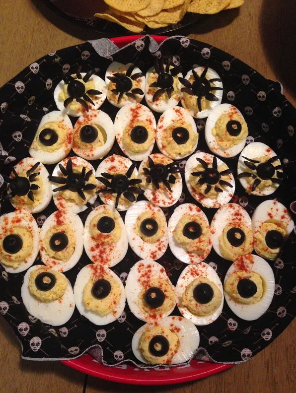

Looking for some easy Halloween ideas for a potluck or your Halloween party? Everyone loves deviled eggs and they are easily turned into creepy spider deviled eggs.
| prep: | 30 mins |
|---|---|
| cook: | 5 mins |
| additional: | 15 mins |
| total: | 50 mins |
| Servings: | 12 |
| Yield: | 12 servings | Nutrition Info |
Place eggs in a saucepan and cover with water. Bring to a boil, remove from heat, and let eggs stand in hot water for 15 minutes. Remove eggs from hot water, cool under cold running water, and peel.
Cut each egg in half lengthwise, remove the yolks, and place the yolks in a bowl with the mayonnaise, mustard, salt, and pepper. Mash the yolks and stir the mixture until smooth and thoroughly combined.
Fill each egg half with the deviled yolk mixture using a spoon, piping bag, or a sturdy plastic bag with a corner cut off.
Cut olives in half and place 1 half on each filled egg as the spider body. Cut the other olive half into 4 strips. Cut each strip in half, so you end up with 8 thin olive pieces for the legs. Arrange 4 olive legs on each side of the spider body. Dust with paprika.